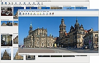
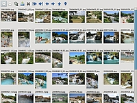
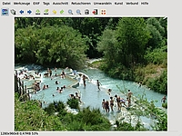

Fotoxx
Dieser Artikel wurde für die folgenden Ubuntu-Versionen getestet:
Ubuntu 16.04 Xenial Xerus
Ubuntu 14.04 Trusty Tahr
Zum Verständnis dieses Artikels sind folgende Seiten hilfreich:
Fotoxx  ist ein Bildverwaltungs- und Bildbearbeitungsprogramm, das den Schwerpunkt auf eine einfache und schnelle Bedienung legt. Insbesondere Einsteigern soll damit ein Werkzeug geboten werden, um den Umgang mit digitalen Bildern unter Linux deutlich zu erleichtern.
ist ein Bildverwaltungs- und Bildbearbeitungsprogramm, das den Schwerpunkt auf eine einfache und schnelle Bedienung legt. Insbesondere Einsteigern soll damit ein Werkzeug geboten werden, um den Umgang mit digitalen Bildern unter Linux deutlich zu erleichtern.
Im Gegensatz zu Programmen wie Shotwell oder F-Spot wird keine interne Datenbank, sondern wie bei gThumb oder Geeqie die vorhandene Ordnerstruktur auf dem Datenträger benutzt. Allerdings sei darauf hingewiesen, dass beim ersten Programmstart zum schnelleren Auffinden von Metadaten ein interner Index angelegt wird. Solange diese Indexierung läuft, können Bilder zwar betrachtet, aber nicht bearbeitet werden. Ob das Programm seinem Ruf "für Leute, denen F-Spot zu eingeschränkt, aber GIMP zu kompliziert ist" gerecht wird, sollte man selbst ausprobieren.

Grundfunktionen:
Bildvorschau (Thumbnails) mit einstellbarer Größe
Diaschau im Vollbildmodus mit Tastaturnavigation
Anzeige und Bearbeitung von Metadaten (Exif, IPTC, etc.)
Eigene Tags erstellen (Bewertung, Bildbeschreibung)
Suche nach Metadaten, Tags, Bewertung, Datum, Beschreibung, Dateinamen
Batch-Funktionen: umbenennen, verkleinern, exportieren, Tags, RAW-Import
Versand von Bildern per E-Mail
Erstellen von CDs oder DVDs
Ausdruck in verschiedenen Standardformaten (auch eigene Größen möglich)
Flexible Bildbearbeitung mit unbegrenzten Rückgängig-/Wiederholen-Schritten und schneller Vorher-/Nachher-Vorschau
Geokodierung des Aufnahmeorts
Bearbeitete Bilder können in den Formaten JPG, PNG oder TIFF (8-/16-Bit) gespeichert werden.
Installation¶
 Fotoxx ist in den offiziellen Paketquellen enthalten. Folgendes Paket muss installiert [1] werden:
Fotoxx ist in den offiziellen Paketquellen enthalten. Folgendes Paket muss installiert [1] werden:
fotoxx (universe)
 mit apturl
mit apturl
Paketliste zum Kopieren:
sudo apt-get install fotoxx
sudo aptitude install fotoxx
Zusätzlich sollten auch die folgenden optionalen Pakete vorhanden sein, um Metadaten und RAW-Bilder anzeigen/bearbeiten zu können:
mit apturl
Paketliste zum Kopieren:
sudo apt-get install libimage-exiftool-perl ufraw
sudo aptitude install libimage-exiftool-perl ufraw
Fremdpakete¶
Der Programmautor stellt (im Regelfall aktuellere) Fremdpakete  im DEB-Format zur Verfügung - allerdings nur für 64-bit-Systeme. Diese können manuell heruntergeladen und installiert [3] werden. Auch Getdeb bietet aktuelle Fremdpakete (für 32- und 64-bit-Systeme) von Fotoxx an.
im DEB-Format zur Verfügung - allerdings nur für 64-bit-Systeme. Diese können manuell heruntergeladen und installiert [3] werden. Auch Getdeb bietet aktuelle Fremdpakete (für 32- und 64-bit-Systeme) von Fotoxx an.
Hinweis!
Fremdpakete können das System gefährden.
Verwendung¶
 Nach der Installation kann das Programm bei Ubuntu-Varianten mit einem Anwendungs-Menü über "Grafik -> fotoxx" gestartet [2] werden.
Bilder anzeigen¶
Das Programm verwendet grundsätzlich zwei Fenster: ein Übersichtsfenster (Bildergalerie) und ein Bearbeitungsfenster für das ausgewählte Bild. Die Größe der Vorschaubilder lässt sich über die Tasten + und - bzw. die entsprechenden Schaltflächen den eigenen Vorlieben anpassen.
Ungewohnt ist das Verhalten der beiden Fenster: schließt man die Bildergalerie, bleibt das Bearbeitungsfenster geöffnet. Schließt man dagegen das Bearbeitungsfenster, wird Fotoxx beendet. Nach einem Neustart des Programms erscheint automatisch wieder das Bearbeitungsfenster - die Bildergalerie muss man selbst öffnen.
Lesenswert ist die über den Menüpunkt "Hilfe" enthaltene englische Anleitung /usr/local/share/doc/fotoxx/userguide-en.html (derzeit ist eine aktuelle deutsche Übersetzung nicht vorhanden).

Bildbearbeitung¶
Die Möglichkeiten, Bilder nachzubearbeiten, sind enorm vielfältig. Viele Beispiele sind auf der Homepage des Programmautors zu finden und geben einen Vorgeschmack, was mit Fotoxx alles möglich ist. Folgende Funktionen sind im Programm enthalten:
Anpassen von Helligkeit, Kontrast und Farben
Schärfen, Weichzeichnen, Rauschreduktion, Rote Augen entfernen
Zuschneiden, Skalieren, Rotieren (beliebige Winkel), Spiegeln (horizontal/vertikal)
Tone Mapping (Detailverbesserung über Helligkeitsstufen)
Erstellen von Panorama- (aus auch ohne Stativ aufgenommenen Einzelbildern), HDR- und HDF-Bildern
Effekte:
Warp (Verzerren, Krümmen), Perspektivkorrektur
Zeichnung, Ölbild, Prägung (emboss)
Editieren auf Pixelebene mit frei wählbaren Pinselgrößen und Blending
Bildsortierung nach Farbe
Bildtransparenz
Erstellen von Wasserzeichen
Automatische Auswahl bzw. Markierung: Freihand, Kantenverfolgung, nach Farben
Kopieren und Einfügen von markierten Bereichen zwischen verschiedenen Bildern
Die Auswahl der jeweiligen Funktionen geschieht über das Menü des Bearbeitungsfensters. Etliche Funktionen bieten zusätzliche Optionen an, mit denen man den gewünschten Effekt gezielt einstellen kann.
Änderungen werden nicht automatisch gespeichert, sondern nur auf Wunsch des Benutzers. Allerdings gibt es beim Beenden des Bearbeitungsfensters einen entsprechenden Warnhinweis.
Konfiguration¶
 Normalerweise erläutert dieser Abschnitt diverse, mehr oder weniger wichtige Programmeinstellungen. Fotoxx wählt einen anderen Weg: außer individuellen Einstellungen bei der konkreten Bildbearbeitung gibt es nichts zu konfigurieren.
Normalerweise erläutert dieser Abschnitt diverse, mehr oder weniger wichtige Programmeinstellungen. Fotoxx wählt einen anderen Weg: außer individuellen Einstellungen bei der konkreten Bildbearbeitung gibt es nichts zu konfigurieren.
Diejenigen, die es aus alter Gewohnheit nicht lassen können, beschäftigen sich mit der Datei ~/.fotoxx/parameters.
Hinweis:
Nicht nur in diesem Artikel steht das Zeichen ~ für die "Eigenen Dateien". Unter Linux ist das der Ordner /home/BENUTZERNAME, wobei Benutzername natürlich variieren kann.
Problembehebung¶
 Was tun, wenn etwas nicht funktioniert? Relativ einfach, die Datei ~/.fotoxx/fotoxx.log studieren. Funktioniert beispielsweise das Brennen von Bildern auf CD oder DVD nicht, findet sich hier der Grund: evtl. ist das Brennprogramm Brasero nicht installiert?
Was tun, wenn etwas nicht funktioniert? Relativ einfach, die Datei ~/.fotoxx/fotoxx.log studieren. Funktioniert beispielsweise das Brennen von Bildern auf CD oder DVD nicht, findet sich hier der Grund: evtl. ist das Brennprogramm Brasero nicht installiert?
PS: wer diese Datei nicht findet, sollte mal in den Artikel Versteckte Dateien schauen.
PPS: bei Ordnern mit mehr als 10.000 Bildern stürzte das Programm in der Vergangenheit ab, ohne eine solche Protokoll-Datei zu schreiben.
Links¶
Dokumentation
- u.a. das Handbuch
Fotoxx 13.07 verwandelt Fotos in Bleistiftskizzen
- heise Open Source, 07/2013fotoxx
- Kompilieren aus dem Quellcode und Beschreibung einiger Funktionen wie HDR oder PanoramabilderGut retuschiert - Bilder bearbeiten mit Fotoxx
- LinuxUser, 06/2010Grafik
 Übersichtsartikel
Übersichtsartikel
- Erstellt mit Inyoka
-
 2004 – 2017 ubuntuusers.de • Einige Rechte vorbehalten
2004 – 2017 ubuntuusers.de • Einige Rechte vorbehalten
Lizenz • Kontakt • Datenschutz • Impressum • Serverstatus -
Serverhousing gespendet von